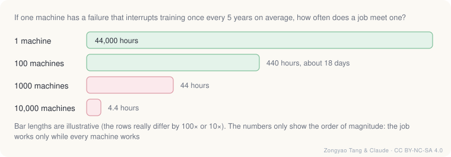
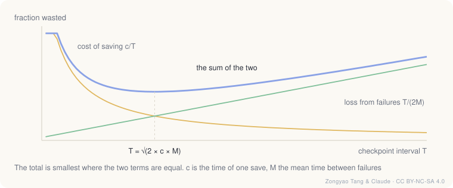

The thread: first do the sums, to see why at scale failures are no longer accidents → the way to cope is to save regularly, and a save has to contain certain things → saving too often wastes time, saving too rarely loses a lot, and there is a best interval in between → when the model is spread over many GPUs, saving itself has to be parallel, and must not make training stop and wait → finally, back to the very front of the pipeline: once there is enough data, the way it is read has to change too. The content of this unit is not "cool", but whether a training run of several weeks finishes depends on it.
Part 7 · Distributed training7.4 Checkpoints, fault tolerance and large-scale data loading
Translated by AI (Anthropic's Claude) from the Chinese edition. The Chinese original is the reference.
This unit answersTraining runs for weeks, and machines will break. How do you make one failure cost only a few minutes?
Follows 7.1–7.3: those units covered how to have many GPUs compute together; this one covers how to keep them computing for weeks on end.
- The larger the scale, the more failures are the norm: one machine is reliable, thousands multiplied together are not
- A checkpoint must save four things: the model, the optimizer, progress, random state
- How often to save: a balance between the cost of saving and the cost of losing
- Distributed checkpoints: each process saves its own, without making training stop and wait
- Large-scale data loading: pack huge numbers of small files into shards, and read them sequentially
Explanation
1The larger the scale, the more failures are the norm: one machine is reliable, thousands multiplied together are not
The chance of one GPU or one server failing is very low, perhaps once in several years. But synchronous training needs every machine to be working at the same time. If any one of a thousand machines has a problem, the whole job stops. A job's mean time between failures is roughly one machine's mean time between failures divided by the number of machines.
Do the sums. Suppose a server (with its GPUs, memory, network cards and power supply) has a failure that interrupts training once every 5 years on average. 5 years is about 44,000 hours.
- 1 machine: once every 44,000 hours on average. A two-week training run will almost never meet one.
- 100 machines: every 440 hours on average, about once every 18 days. A two-week run will most likely meet one.
- 1000 machines: every 44 hours on average. Seven or eight in two weeks.
- 10,000 machines: every 4.4 hours on average. Several a day.

Under the same assumption, each step up in scale shortens the interval by a step (These figures are to show the orders of magnitude. Real failure rates differ from cluster to cluster, and are higher both when new machines first come into service and once they are old.)
Why "divided by the number of machines". As 7.1 said, every step of synchronous training needs every process to take part in collective communication. If any one process is gone, the others are stuck at the next all-reduce. So the condition for the job to run is "every machine working at the same time", and its failure rate is the sum of all the machines' failure rates.
What failures happen.
- Hardware: uncorrectable errors in a GPU's memory, a GPU dropping off the bus, NVLink or network card link errors (5.1's Xid, 5.2's counters), power and cooling problems.
- Software: a driver crash, a process killed for running out of memory, storage or the network briefly unavailable so that reading data or writing a checkpoint fails.
- Scheduling: the cluster preempts your job for maintenance or to make way for a higher-priority job (part 8). From the training program's point of view, this is no different from a failure.
There is a more troublesome kind too: failures that report no error. Hardware occasionally computes a wrong result without reporting any error. It does not stop the job; it quietly contaminates training. It may show up as a sudden spike in the loss, or NaN. The defence is monitoring (the loss and gradient-norm curves of 1.3), and being able to go back to an earlier checkpoint when something is abnormal.
This changes the design goal of the system. At small scale, the goal is "no failures". At large scale that goal is unrealistic, and is replaced by "when a failure happens, lose little and recover quickly". The next few cards are all built around it.
The Epoch AI article makes a more detailed estimate, and concludes that as long as checkpointing is done well, the losses from failures can be kept to a small fraction and do not become an obstacle to scaling up. The next step is to see what "done well" means in practice.
An analogyLike a string of old-style festive lights, wired in series: if one bulb fails, the whole string goes dark. Each bulb lasts ten thousand hours, but string a thousand of them together and on average they go out every ten hours.
So in large-scale training a failure is not a "just in case" but a routine event on the schedule. The system has to be designed on the basis that "it will happen, and often": detect it automatically, recover automatically, lose as little as possible each time.
Builds on Data parallelism: a full copy of the model on every GPU, each taking part of the dataThe price of never dropping packets: congestion travels back along the links, and one slow spot slows a whole areaFive ideas come back in every layer- There is only one basic way to cope with failures: save the state of training regularly. First see what "state" actually includes.
2A checkpoint must save four things: the model, the optimizer, progress, random state
To make training continue exactly from where it was interrupted, saving the model parameters alone is not enough. You also have to save: the optimizer's state (Adam's two sets of statistics, the current position in the learning-rate schedule); training progress (which step, how far the data has been read); the state of the random number generators. Leave out any one, and training after recovery will differ from training that was never interrupted.
One: the model parameters. Self-evident. With mixed-precision training, what has to be saved is the 32-bit master copy (7.2).
Two: the optimizer state. As 1.2 explained, Adam keeps a first and second moment for every parameter, statistics built up gradually over training. Without them, after recovery the optimizer starts accumulating from zero, and the direction and size of the updates are wrong for the first few hundred steps, as if training had a cold start without warm-up in the middle. The loss curve shows an obvious spike, and takes a while to recover.
This is also why a checkpoint is much larger than a "model file": by the accounting of 7.2, the optimizer state is two to three times the size of the parameters.
Three: training progress.
- Which step it is. Learning-rate schedules (the warm-up and decay of 1.3) are computed by step count. Get the step wrong and the learning rate is wrong.
- How far the data has been read. Otherwise after recovery either part of the data is learned twice or part is missed. For shuffled data, the same order has to be recoverable, and the same position jumped to.
- Mixed precision's loss scaling factor (2.6), an exponential moving average copy of the parameters and so on, if they are used.
Four: random state. Shuffling the data, dropout and data augmentation all use random numbers. Only by saving the state of the random number generators can the same random sequence as an uninterrupted run be produced after recovery. This item is not needed for "can training continue", but it is needed for "can it be reproduced": when something goes wrong and you want to go back to a step and recreate the situation at the time, this is what you rely on.
Five: configuration and metadata. The model's structural parameters, the training hyperparameters, the version of the code. Coming back to a checkpoint weeks later, without these you cannot tell how it came about.
How to check that recovery is right.
- Save a checkpoint at step 1000.
- Experiment A: carry on without interruption to step 1200.
- Experiment B: recover from the checkpoint and run to step 1200.
- Compare the two loss curves. Exactly coinciding is best; if they are only very close (differences on the order of floating-point error), it is usually because some operations are not bitwise deterministic on the GPU in the first place, which is acceptable; if there is an obvious jump after recovery, something was left out.
This test should be run once before training properly starts. Discovering that the checkpoint is incomplete only when a failure has actually happened is too late.
How many to keep. Do not keep only the latest one: if the machine fails halfway through writing it, that one may be incomplete. Nor keep them all: each one is large. A common practice is to keep the most recent two or three, plus one kept permanently every long interval. When writing, write to a temporary file first and rename it when done, so that at every moment there is at least one complete checkpoint on disk.
An analogyLike a game save: recording only the character's level is not enough; you also have to record what is in the backpack, how far the quest has got, and where on the map you are. Otherwise after loading you are a top-level character, empty-handed, standing at the starting point.
So "it loads and keeps running" is not the same as "it recovered correctly". The way to check: save once, then "keep running" and "load and run" for the same number of steps; the two loss curves should coincide.
Builds on The larger the scale, the more failures are the norm: one machine is reliable, thousands multiplied together are notAdam = momentum + a step size of its own for each parameterMixed precision + Adam: each parameter takes 16 bytesThe learning rate is the most important knob: warm up first, then decay- We know what to save. Next comes a very practical question: how often to save it.
3How often to save: a balance between the cost of saving and the cost of losing
The more often you save, the less progress each failure loses, but the more time goes on saving. The less often, the opposite. The interval that wastes least in total is about the square root of "2 × the time of one save × the mean time between failures". With 1 minute per save and a failure every 10 hours on average, that is roughly a save every half hour.
Two kinds of waste. Say a save is made every T, one save takes time c, and the job fails on average every M.
- The overhead of saving. In every T, c is spent saving (assuming training stops while saving). The fraction wasted is c ÷ T. The larger T, the smaller this term.
- The loss from failures. When a failure happens, all the work since the last save is thrown away. On average a failure happens right in the middle between two saves, so each one loses T ÷ 2. Once every M, the fraction wasted is T ÷ (2M). The larger T, the larger this term.
Total waste = c/T + T/(2M). One term shrinks as T grows, the other grows. The total is smallest when the two terms are equal, which gives:
T = √(2 × c × M)
This is a very old result from high-performance computing. The total fraction wasted is then about √(2c/M).

Saving too often and too rarely both waste time Put in a few sets of numbers.
One save c Mean time between failures M Best interval T Total waste 1 minute 40 hours about 70 minutes about 3% 1 minute 4 hours about 22 minutes about 9% 5 minutes 4 hours about 49 minutes about 20% 10 seconds 4 hours about 9 minutes about 4% Three things to read from the table.
- When the scale grows ten times, M shrinks to a tenth (previous card), and the interval should shrink to about a third, not a tenth.
- When failures are frequent, the speed of saving becomes crucial. The third row: 5 minutes per save, and a fifth of the time is wasted. The fourth row: get a save down to 10 seconds, and the waste is back to 4%. So large-scale training spends a lot of engineering effort on "making checkpoints faster" (next card).
- As long as c is far smaller than M, the waste is under control. This is the core argument of the Epoch AI article: hardware failures will not become a hard limit on scale, provided checkpoints are fast enough.
Factors the formula leaves out.
- The time to recover. After a failure the job has to be rescheduled, processes started, the checkpoint loaded, the model recompiled (2.5) and NCCL reinitialised (6.2), which may take ten-odd minutes. This is a fixed loss per failure, independent of the interval, but it has to be counted in the total.
- If saving does not block training (asynchronous, next card), c is close to zero, and you can save very often.
- Preemption usually comes with advance notice (part 8). Save at once when the notice arrives, and this kind of "failure" loses almost no progress.
What to do in practice. Measure your c (how long one save takes); find out the order of magnitude of M from those who run the cluster, or work it out from your own jobs' history; compute a starting point from the formula. The interval is usually set in steps; just convert the time into steps.
An analogyLike pressing save while writing a long document: save after every keystroke and all the time goes on saving; save only once after a whole day's writing and a power cut loses everything. The right frequency depends on how much trouble one save is, and how often the power goes off.
So the checkpoint interval should not be a number written down on a whim. It depends on two quantities that can be measured. At larger scale failures are more frequent and the interval has to shrink; and to shrink the interval without waste, saving itself has to get faster.
Builds on A checkpoint must save four things: the model, the optimizer, progress, random stateSplit the time of one step: how much each stage takes- The conclusion of the previous card: the faster saving is, the better. In distributed training, "fast" takes two methods.
4Distributed checkpoints: each process saves its own, without making training stop and wait
When the model is spread over many GPUs with FSDP, no single process holds the full parameters. Gathering them in one place to save them is slow and may not even fit. A better way is for each process to write its own share straight to a file, all processes writing at once; and to first copy the data from GPU memory to main memory, so training continues immediately while a background thread writes to disk at its own pace.
The naive way and its problems. Have process 0 do the saving: first all-gather every parameter and the optimizer state to it, then write them out as one file.
- As 7.2 said, FSDP is used precisely because the full model state does not fit on one GPU. Gathering it in one place may simply run out of GPU memory, and main memory may not be enough either.
- One process writing one huge file sequentially is limited by the speed of a single write stream. A checkpoint of hundreds of GB takes a long time to write.
- All the other processes wait during this time.
Method one: write in parallel. Each process saves only the shard it holds, each to its own file; a small piece of metadata records "how the full tensors are split, and which file each piece is in".
- The total write bandwidth grows with the number of processes (as long as the storage system can keep up, which usually requires a parallel file system or object storage).
- There is no gathering step, so no extra GPU memory is needed.
- At load time it can be read back with a different split: a checkpoint saved on 64 GPUs can be recovered on 128, each process reading from the metadata only the pieces it needs. This is useful when the scale has to change, or when moving from training to evaluation.
PyTorch's distributed checkpointing (
torch.distributed.checkpoint) works this way, and the TorchTitan paper has a section on it.Method two: write asynchronously. Writing to disk is slow because storage is several orders of magnitude slower than GPU memory and main memory (0.3). But all that training needs "frozen" is the moment the state is copied out:
- Training pauses.
- The tensors to be saved are copied from GPU memory to main memory. This runs at the speed of PCIe (5.1), so even tens of GB take only a few seconds.
- Training continues.
- A background thread writes this copy in main memory out to storage; however long it takes, training is not affected.
So the c in the previous card's formula changes from "the time to write to disk" to "the time to copy from GPU memory to main memory", one or two orders of magnitude smaller. TorchTitan reports that in this way they brought the overhead of checkpointing down to very little.
Another example of "fill the waiting with other work" from 0.1: slow IO is moved into the background, overlapping training's computation. And the cost follows the same pattern: an extra copy's worth of main memory is taken up; and if the previous save has not finished writing when the next one is due, it has to wait or be skipped.
Consistency. All processes must save the state of "the same step". In synchronous training this comes naturally: everyone pauses together at the boundary of the same step. What to be careful of is not to save in the middle of a step (say with the parameters half updated).
Storage becomes the bottleneck. With all processes writing at once, the instantaneous write volume is large. If the storage system lacks bandwidth, or shares the same front-end network as reading training data (5.3), saving may slow down data reading. On the timeline this shows up as a drop in throughput every fixed number of steps. As 0.2 said: for regular fluctuations with a long period, first check whether it is checkpoint saving.
An analogyLike a large company doing its year-end filing: rather than every department sending its files to head office for one person to sort, each department boxes up its own, puts uniform labels on, and sends them to the warehouse itself. Boxing up takes only a few minutes, after which every department carries on as usual, and the logistics team does the carrying.
So checkpoint time can drop from "proportional to the size of the model" to "proportional to the size of the share on each GPU", and asynchronous writing then reduces the disturbance to training to one copy from GPU memory to main memory.
Builds on How often to save: a balance between the cost of saving and the cost of losingFSDP's rhythm: assemble a layer in full only when it is used, let it go as soon as it has been usedThe memory hierarchy: each level further away is one to three orders of magnitude slowerA training cluster has two networks: the front end for data and management, the back end only for RDMA between GPUsFive ideas come back in every layerUsed later in Large-scale data loading: pack huge numbers of small files into shards, and read them sequentiallyHow data, checkpoints and configuration get into the containerWhen there are not enough GPUs: three ways to share one GPU, and preemptionSourcesTorchTitan paper, page 7: distributed checkpointing and asynchronous savingPyTorch docs: Distributed Checkpoint- Finally, back to the very front of the pipeline. Once there is enough data, the methods of 2.4 are not enough.
5Large-scale data loading: pack huge numbers of small files into shards, and read them sequentially
When the training data has hundreds of millions of samples, storing one sample per file does not work: the cost of opening files alone overwhelms the storage system, and random reads cannot make use of the storage's bandwidth. The common practice is to pack samples into a few thousand to tens of thousands of large "shard" files, read each shard sequentially, and shuffle at two levels: first shuffle the order of the shards, then shuffle samples inside a buffer.
The trouble with small files. The Dataset of 2.4 fetches samples by index:
dataset[i]opens file i. That is fine when the data is on a local disk and there are not many samples. With hundreds of millions of files on network storage:- Every file opened first needs a query to the storage system for where it is (a metadata operation). This operation is slower than reading the data itself, and the storage system's metadata service is easily saturated.
- Randomly reading small files one at a time pays a fixed round-trip latency each time (0.3), and the storage's bandwidth goes unused.
- Shuffling means every read is random, so each sample pays both of the above.
Pack into shards. Write samples in order into a set of large files, each hundreds of MB to a few GB, holding thousands to tens of thousands of samples. The format can be very simple, such as a tar archive, or a binary file of records laid end to end.
- Files are opened several orders of magnitude fewer times.
- A shard is read sequentially from start to finish, so storage can deliver at full speed, and the system's read-ahead can work.
- Object storage (the cheapest kind of storage in the cloud) is good only at "reading a whole object sequentially", which shards suit exactly.
This is "batch things to spread fixed costs" from 0.1 as it looks in storage: when each access has a high fixed cost, make each access fetch more.
What about shuffling. Reading sequentially means samples from the same shard always appear together. Approximate true randomness with two levels of shuffling:
- At the start of each epoch, shuffle the order of the shards.
- Samples read out first go into a buffer (say holding ten thousand samples); each time, one is taken at random from the buffer and sent on, and a new one is read in to replace it.
This is not a strictly uniform shuffle, but with a large enough buffer and enough shards, it works well enough. The precondition is that the data was shuffled as a whole once before packing; otherwise a shard is full of similar samples (as 1.3 mentioned: periodic ups and downs in the loss curve are often a sign of insufficient shuffling).
How to divide it among processes. By shard:
- Between GPUs: each training process gets a non-overlapping set of shards.
- Between the several workers of one training process (2.4): that set of shards is divided again among the workers.
So the number of shards has to be far larger than "number of GPUs × workers per GPU", or they cannot be divided evenly. A common mistake here: forgetting to split between workers, so that every worker reads the same data from the beginning and the model sees each sample many times.
The connection to checkpoints. The card before last said a checkpoint must record "how far the data has been read". With streaming reads, this position is "the order of the shards + which record of which shard each process has reached + what is left in the buffer". Recovering it exactly is fiddly, and many systems recover only to the level of the shard, accepting a few samples repeated or missed.
For language models it is simpler. As 2.4 said, text tokenised in advance is just some very large integer arrays, which are "shards" already. Each process takes contiguous stretches from its own few files. The approach above is mainly for data such as images, video and audio, where "samples are independent small files".
An analogyLike moving a whole library's books: finding and carrying them one at a time, most of the time goes on finding books. Pack them in boxes and carry a box at a time, and it is much faster. The price is that you cannot pull out any book you like at will; you have to open a box first.
So once data reaches scale, the assumption of "random access to any sample" has to be given up, replaced by "sequential reading of shards". The Dataset of 2.4 also changes from the form "fetch a sample by index" to "a stream that keeps producing samples".
Builds on Distributed checkpoints: each process saves its own, without making training stop and waitThe easiest optimisation: preprocessing that can be done in advance should not wait until trainingThe birth of a batch: sampling, fetching samples, collating, pinning, onto the GPUThe memory hierarchy: each level further away is one to three orders of magnitude slowerFive ideas come back in every layer
Putting it together
The more machines, the more frequent the failures: however reliable one machine is, multiplied by thousands it becomes several times a day. A checkpoint has to save the model, the optimizer state, training progress and random state; leave out any one and training cannot resume exactly. The interval between saves is on the order of the geometric mean of "the cost of one save" and "the mean time between failures". In distributed training each process saves its own shard, and writes to disk asynchronously. Huge amounts of data are packed into shards and read sequentially, and shuffled shard by shard.
Test yourself
Without looking back at the explanation, say it in your own words.
- Why does the frequency of failures a training job meets rise sharply as the number of machines grows?
- What should a complete training checkpoint contain? What goes wrong if only the model parameters are saved?
- Which two quantities decide the best checkpoint interval? How should the interval be adjusted as a job grows in scale?
- In distributed training, why should you not gather all the parameters in one process to save them? How do asynchronous checkpoints reduce the effect on training?
- Why does large-scale training pack data into shards? Once sharded, how is shuffling done, and how is data divided among processes and GPUs?